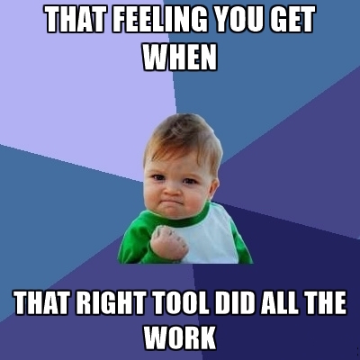

Build stuff
The most important file is the POM (Project Object Model).
POM contains the structure of the project, and it is up to Maven to build it, based on this info.
A POM file does not contain code, it is an XML representation of a Maven project.
I know it is vague. But understanding it all would take the magic out.
Quick start Maven with Spring Boot.
Maven official documentation & how to use Maven with Spring Boot.